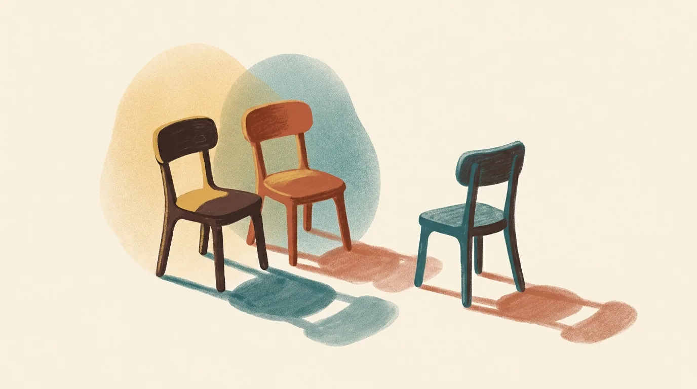

What actually happens in premarital counselling.

Most couples arrive slightly lopsided. One of them booked the session. The other came along politely, a little braced, waiting to find out what is supposed to be wrong with them.
Nothing is wrong with them. That is usually the first thing we say.
Premarital counselling has a reputation problem in India. The word counselling still carries the sense of repair, of something broken being taken somewhere to be fixed. So an engaged couple hears it and reasonably wonders why they would need it when they are happy, when the date is fixed, when both families are already deep in wedding logistics.
We came to it the same way. Before we married, we were sent to a premarital counsellor. Our relationship was healthy. We were not in any difficulty. And across those sessions we found things we were already doing to each other, small ones, that neither of us had the words for and neither of us would have raised alone. Thirteen years and two children later, that is still the work we go back to.
This is what the room actually looks like.
What actually happens in premarital counselling?
You take an assessment before the first session. Then you sit with a counsellor and go through what it found, area by area, over several conversations spaced a couple of weeks apart. You talk about money, conflict, family, expectations and faith. Nobody grades you. Nothing is decided for you.
That is the shape of it. The detail is more interesting than the outline.
At Famarliar both of us are in the room. We work with a couple together, because two counsellors who are themselves married notice different things, and because it means neither of you is sitting across from a single stranger holding all the authority in the conversation. If one of you needs a session on your own, either of us can do that.
Sessions run about ten to fifteen days apart. That gap is deliberate. A great deal of the actual work happens in the fortnight between sittings, in ordinary conversations at home, when something one of you said in the room comes back at an unexpected moment. Weekly sessions would give you less time to live with it.
Why go if nothing is wrong?
Because premarital counselling is not a repair job. It is closer to learning the map of a place you are about to move to. Couples in real difficulty come to counselling to recover something. Engaged couples come to build well from the start, which is a much easier task and a much cheaper one.
Here is the thing almost nobody expects.
The problems that surface later in a marriage are rarely dramatic. They are usually small differences that were always there and never named. How one of you handles being upset. What each of you assumes about money without ever having said it out loud. Who is expected to call whose parents on a Sunday. None of these feel like issues while you are engaged, because engagement is a season where differences read as charming.
They stop reading as charming somewhere around the second year.
A good premarital process finds those differences while they are still small enough to be curious about. You are not solving problems. You are learning each other's actual shape, before the shape starts to matter.
What is the Prepare/Enrich assessment?
Prepare/Enrich is a structured relationship assessment used by trained facilitators. You each complete it separately online, answering a long set of questions about how you see the relationship. It produces a report showing where the two of you already agree strongly and where your answers pull apart.
You take it before the first session, and it is paid, once.
We ask for it up front for a practical reason. Without it, the first two sittings get spent describing your relationship to us from scratch, which is your time and your money spent on getting us up to speed. With the report in hand, the first session starts somewhere useful.
What the report is good at is finding the gaps you did not know were gaps. Two people can be certain they agree about children, and answer that question quite differently, and neither of them has ever noticed because the topic only ever came up as a joke.
What it is not is a verdict. There is no compatibility score at the bottom telling you whether to go ahead. We have never once used it that way and we would not. It is a conversation starter with unusually good aim.
What do you actually talk about?
The assessment shapes it, so no two couples cover exactly the same ground. Some subjects come up with nearly everyone.
Communication. Not the polite version. How you each behave when you are genuinely upset, because that is the version your marriage will actually run on. One of you might go quiet and need an hour. The other might need to resolve it before sleeping. Neither is wrong. Discovering it at 11pm during your first real fight as a married couple is a harder way to learn it.
Conflict. Every couple has a repeating argument. You may already know yours. Most couples can name it in about forty seconds once somebody asks.
Money. Who earns, who decides, who knows the passwords. What happens when one set of parents needs help and the other does not. Whether either of you is carrying a loan the other has not been told the size of. This is the subject couples most often thank us for making them discuss, and the one they most often try to skip.
Family and in-laws. More on this below, because in most Indian marriages it is not a side topic.
Roles and expectations. Who does what, and more importantly, why each of you assumed it would be that way. Usually the answer is the house you grew up in.
Faith. We are a faith-informed practice and we say so openly. We also work with plenty of couples who want none of that, and the work is just as good. If faith matters to one of you and not the other, that itself is worth a conversation before the wedding rather than after.
Intimacy and expectations of marriage. Handled with care, and never as a checklist.
Does this work if ours is an arranged marriage?
Yes, and if anything the case is stronger. When a couple has known each other for four months with a date already fixed, there is less shared history to draw on and more that has simply been assumed. A structured process gives you a fast, honest way into subjects you have not had two years of Sunday afternoons to stumble across.
Almost everything written about premarital counselling online is written for American couples who dated for years and chose the wedding date themselves. That content is fine. It is also answering a different question from the one in front of you.
If you met through families, your situation has its own particular shape. You are getting to know each other and preparing to marry at the same time, on a timeline somebody else largely set. You may like each other a great deal and still have no idea how the other person behaves under real pressure, because you have not yet seen it.
That is not a deficiency. It is simply where you are starting from, and it is a perfectly good place to start. It does mean the questions worth asking are different, and more urgent, and better asked in a room with somebody whose job is to keep the conversation honest.
We have written more about this in premarital counselling when your families introduced you.
Consider a pattern we see often, and this is illustrative rather than any real couple. Two people, introduced in March, marrying in October. Both are warm, both are willing, both have quietly decided that the other seems easy-going. Then the assessment shows one of them expects to send money home every month and the other has never considered it. Nobody lied. It simply had not come up. In October it would have come up, and it would have come up as a fight.
What about our families?
They are part of the conversation, because in most marriages here they are part of the marriage. That is not a complaint about Indian families. It is just the actual arrangement, and pretending otherwise helps nobody.
Several questions are worth settling before the wedding rather than discovering afterwards.
Where will you live, and for how long, and who decided. If you are moving in with parents, what does a normal Tuesday look like. Who handles it when your mother and your spouse disagree, and does that person know they have been volunteered. How much of your household decision-making do you each expect your parents to have a say in.
Couples who have talked all this through are noticeably steadier in the first year. Not because the difficulties disappear. Because the two of you have already agreed you are on the same side of them.
One more thing on this. We hold sessions in English, Tamil and Kannada, and it matters more than people expect. Couples say things in the language they grew up arguing in that they never quite manage in English. If the honest version of your feeling arrives in Tamil, we would rather have it in Tamil.
How long does it take, and when should we start?
Plan on a handful of sessions across two to three months, though the number varies by couple. Start early enough that the last session is not the week of the wedding. Three to six months out is comfortable. Two months is workable. The week before, when you are exhausted and the caterer is calling, is not.
Every couple begins with a free thirty-minute call. Nothing is charged for it and nothing is expected from it. You get a feel for us, ask whatever you want to ask, and decide afterwards whether to go further. Plenty of couples take that call and decide the timing is wrong. That is a completely fine outcome.
Is premarital counselling worth it?
We are obviously not neutral, so take the honest version rather than the confident one.
It is worth it if you go in willing to say true things. A couple who attends to tick a box, agreeing pleasantly with everything, will get very little. The value comes from the moments where one of you says something slightly uncomfortable in front of the other and finds that the room holds it.
It will not marriage-proof you. Nobody can offer that, and anybody who does is selling something. What it does is give you a shared vocabulary and some practice using it, so that the first serious disagreement of your marriage is not also the first time you have ever tried to talk about how you disagree.
That is what our own counsellor gave us, years before we did this for anyone else. We did not understand at the time how much we would use it.
Common questions
Do we both have to want this? Ideally yes, though it is common for one person to book and the other to arrive sceptical. Scepticism is fine. Refusal is harder. If your partner is genuinely unwilling, start with the free call on your own and we will talk honestly about whether it is worth pushing.
Will you tell us not to get married? No. That decision is yours and stays yours. Our work is to make sure you are making it with the fullest possible picture, not to make it for you.
Is any of this shared with our families? Nothing leaves the room. Confidentiality is the first thing we cover in the first session, and it holds regardless of who is paying or who made the introduction.
We are already living together. Is this still useful? Yes. Living together answers questions about logistics and habits. It tends not to answer the ones about money, in-laws and children, which are the ones the assessment tends to surface.
Do we have to be religious? No. We are faith-informed and we say so plainly, and we adapt without it whenever a couple prefers. It is your marriage.
Where to begin
If you are reading this with a wedding date already set, the useful next step is small. Ask each other one of the questions above tonight, properly, without rushing to agree. Money is a good one to start with. See what surfaces. If you want more to work from, we put together questions to ask before you marry, with what to listen for in each answer.
If something does surface and you would rather not work through it alone, that is what the first call is for. It is free, it is confidential, and it costs you half an hour.
You can read more about how we work with engaged couples, see who we are, or start with the free call. If you are already married and reading this wishing you had done it earlier, that is very common, and counselling for couples is a real option at any stage.
If you would rather join a course with a date and a price, Marriage Ready is our six-week online premarital counselling course: six live Zoom sessions with six to eight couples, the Prepare/Enrich assessment included, from Friday 13 November 2026. It costs ₹24,000 per couple, or AED 2,000 in the Gulf, paid online.
Written by Pradeep Mcwin (M.A., Marriage and Family Counselling) and Gomathi Mcwin (Diploma, Marriage and Family Counselling), who have practised together in Bangalore for over five years and have been married for thirteen.
This article is for information and is not a substitute for personal counselling. Every relationship is different. If something here sounds like your situation, start with a free, confidential 30-minute call.